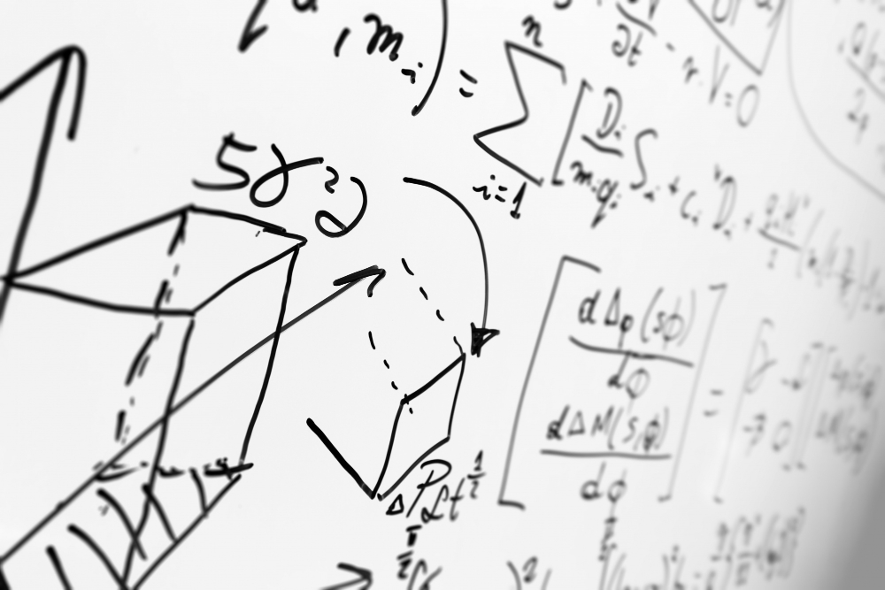

Conheça um jogo inovador que une a Matemática apresentada em sala de aula com o universo dos games com Matemágica: A Jornada Modular!

Mas como unir matemática com um jogo? Simples: Avance com Leon e controle-o em suas aventuras pelas terras matemáticas, enfrentando os dificultadores da matemática e, no final, mostar que a matemática não é difícil e é divertida!
Nosso jogo é totalmente grátis! Navegue por nosso site e fique inteirado sobre a lore do jogo e quem são os inimigos nessa batalha épica! Mais que um projeto: uma experiência!
VÍDEO